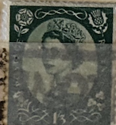
| SOURCE | TITLE| IMAGE MATCH | click to source page |
| eBay | 1914. Russian Empire stamp, ERROR!!! "Lower lip" War Charity MNH Zag #128A Ka | eBay | 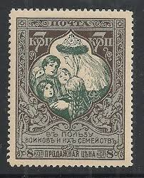 |
| eBay | RUSSIA 1914 COLOR PAPER SCB7a, SYMBOLICAL OF CHARITY 13 1/2 PERF MNH #6 | eBay | 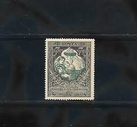 |
| eBay | Russia 22nd issue. Sc. B11p. CK. 132p. MNHOG. Specimen w. per. 11.5. SCV $350+ | eBay | 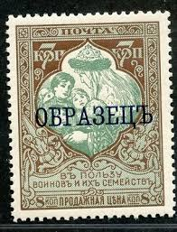 |
| Invaluable.com | Sold at Auction: US Horse Blanket Notes, 1914 $5 1917 1923 $1 (3pc) |  |
| Some from Russia : u/Fair_Sugar_3229 | 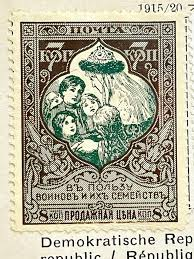 | |
| Rate Your Music | Sierra Ferrell - Dollar Bill Bar - Lyrics and ratings - Rate Your Music | 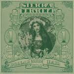 |
| Just Collecting | Burma 1942 9p Myaungmya 9p yellow-green, SGJ14 — JustCollecting | 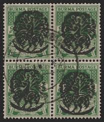 |
| Wikipedia | Postage stamps and postal history of Poland - Wikipedia | 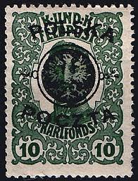 |
| Iran Philatelic Study Circle | Stamps of Reza Shah Pahlavi 1925 - 1940 — Iran Philatelic Study Circle | 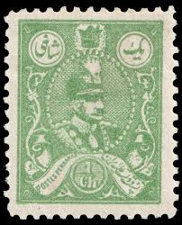 |
| eBay | Russian Empire 1915, War of 1914 Specimen,11 1/2 perf,SC#B12, Mi#103a extr rare | eBay | 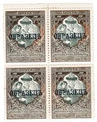 |
| Russia Stamp Album | Russia Stamp Album Volume1,2,3.qxd | 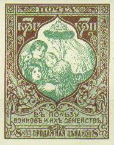 |
| Colnect | Stamp: Allegory: Mother Russia Patronizes the Orphans of War (Russia(For the benefit of soldiers and their families.) Mi:RU 101A,Sn:RU B7,Yt:RU 95,Sg:RU 145,Un:RU 95,Zag:RU 128 📮 | 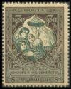 |
| eBay | RUSSIA YR 1914,SC B11,MI 105B,MLH,BROKEN MOUTH PLATE ERROR, PERF 12-1/2,SIGNE | eBay | 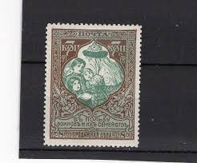 |
| Stamp Auction | Heinrich Koehler Auctions GmbH & Co. KG Sale - 382 Page 51 | 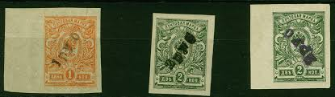 |
| eBay | Russia 1914 War Aid,,Mother Russia rescues the Orphans,M.101,MLH,ERROR(1) | eBay | 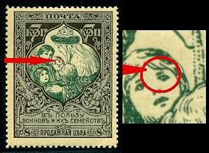 |
| JLK Stamps | CSA Postal History Fakes - Title Page | 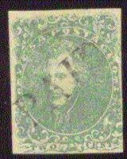 |
| HipStamp | Cuba Stamp VFU 1/2 R. Plata F. Correos #Agob4 | Caribbean - Cuba, General Issue Stamp / HipStamp | 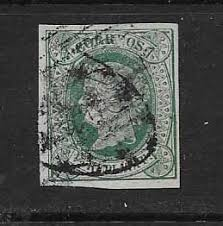 |
| eBay | Russia #B11 Mint Hinged OG p2402.4126 | eBay | 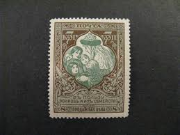 |
| eBay | Russia 1915 #B11 Variety MH OG 7k Russian Imperial Empire Semi-Postal Issue!! | eBay | 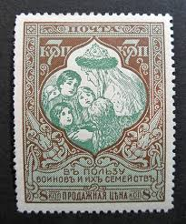 |
| lastdodo.com | Stamps from Russia [1920-1922] - Far Eastern Republic Stamp catalogue - LastDodo | 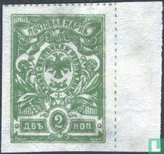 |
| Toovey's | Canada study of 1897 Jubilee stamp issue with fine used set ½ cent to $5 with CDS postmark | 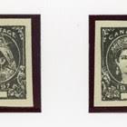 |
| lastdodo.de | Befreiung Letgallen 50 (1920) - Lettland - LastDodo | 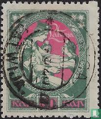 |
| armeniazemstvo.com | Trevor Pateman's Philately Blog: Armenia 1921 First Star Overprints | 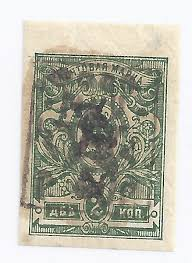 |
| HipStamp | Russia sc# B5a-8a mh (B6a used) cat value $37.50 | Europe - Russia & Soviet Union, Semi-Postal Stamp / HipStamp | 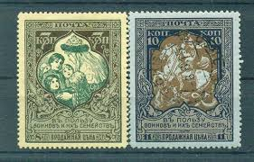 |
| Linns Stamp News | Identifying New Zealand's King George V 1½d look-alike stamps | 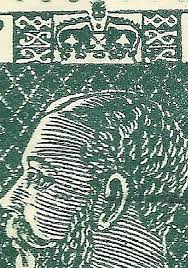 |
| eBay | Handstamped Saxon German & Colonies Postage Stamps for sale | eBay | 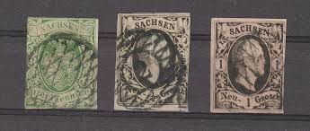 |
| StampWorldHistory | Mountain Republic | Stamps and postal history | StampWorldHistory | 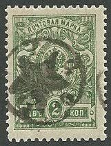 |
| eBay | RUSSIA 1914 COLOR PAPER SCB5a,B7a 13 1/2 PERF MNH #8 | eBay | 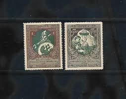 |
| HipStamp | Nicaragua CUT Squares MH BIN $8.50 | Central & South America - Nicaragua, Stamp / HipStamp | 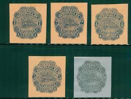 |
| eBay | Mint Hinged Historical Events Greek Stamps for sale | eBay | 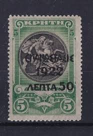 |
| Rare Iranian revenue stamp with overprints | 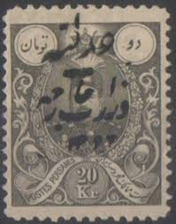 | |
| eBay | Armenia 🇦🇲 1920 SC 248 mint Type F or G over Type A black. g3836 | eBay | 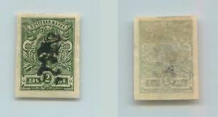 |
| GetArchive | 30 Stamps of armenia 1922 Images: PICRYL - Public Domain Media Search Engine Public Domain Search | 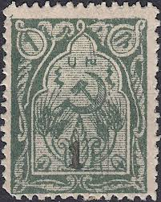 |
| www.marccarrasco.com | 1921 Armenian Stamp Lot | 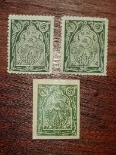 |
| GetArchive | Pocht marka Orden Lenina - postal stamp - PICRYL - Public Domain Media Search Engine Public Domain Image | 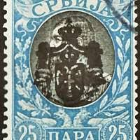 |
| eBay | Yugoslavia #1L45 mint hinged b23.9 1384 | eBay | 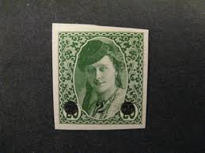 |
| eBay | Germany Bayern 1920 10 M MI 194, white mark under basket, Unlisted ERROR | eBay | 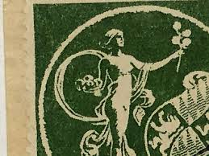 |
| Stamp Auction Network | Daniel F. Kelleher Auctions, LLC Sale - 698 Page 22 | 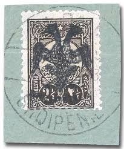 |
| Stamp Auction Network | catalog Level 3 | 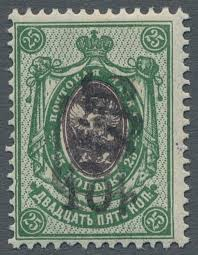 |
| eBay.de | Britische Central Africa ( Bca ) 1896 ( Sg 42s 25 Pnds Specimen) F/VF MH Rare | eBay.de | |
| Blogger.com | Big Blue 1840-1940: Romania and Forgeries | 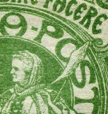 |
| Colombia Antioquia 1899 .Reprint ,forgery? | 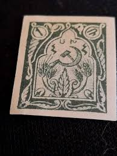 | |
| StampWorldHistory | Burma | Stamps and postal history | StampWorldHistory | 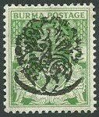 |
| Stamp Auction Network | Daniel F. Kelleher Auctions, LLC Sale - 632 Page 36 | 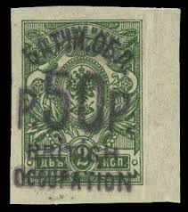 |
| eBay | Military, War Postage Turkish Stamps for sale | eBay | 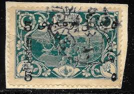 |
| TouchStamps | Stamp: Urdu Inscription Stamp (Cinderellas 1880) - TouchStamps | 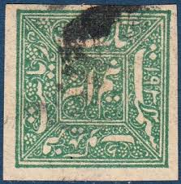 |
| eBay | STAMPS-RUSSIA. 1922. 2k Green “Philately for The Children” Commem. SG: 274. FU | eBay | 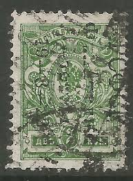 |
| BalkanPhila | 1920 Arab Kingdom 2/10pi Block of 12 – BalkanPhila | 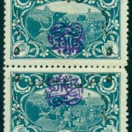 |
| eBay | RHM:BR 41 Mi: BR42 1877 Brazil 100 Rèis DOM PEDRO II BARBA BRANCA - PERCÊ used | eBay | 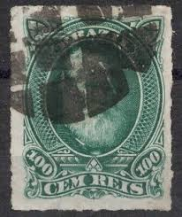 |
| eBay | ALBANIA # 5 MINT OVERPRINTED TURKISH STAMP | eBay | 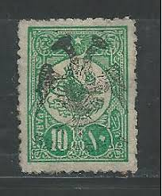 |
| eBay | HALFPENNY Green STAMP GB EDWARD Vii - posted 4th May 1903 | eBay | 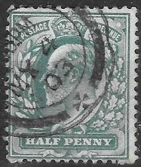 |
| eBay | Chinese Imperial Post Stamp | eBay | |
| Linns Stamp News | Saar's history and limited number of issues make it collectible | |
| Stamp Auction Network | catalog Level 3 | |
| Colnect | Burma, Japanese Occupation : Stamps [Year: 1942 | Currency: A - Burmese anna] [1/4] : Colnect 📮 | |
| Colnect | Stamp: Emperor Alexander II (Russia(300th Anniversary of the Romanov Dynasty (1913)) Mi:RU 83,Sn:RU 89,Yt:RU 77A,Sg:RU 127,Sol:RU 80,Un:RU 77A,Zag:RU 110 📮 | |
| eBay | Russia 1915 Sc 132A Mother Russia saves orphans Scott B12 MH OG | eBay | |
| Colnect | Russia, Civil War Regional Issues : Stamps [1/41] : Colnect 📮 | |
| clicandfin.com | Vintage Postage Stamps Palestine/British 20 Different Stamps (Stamps For Collectors Prophila Guarantee Stamp Assortment | |
| eBay | Italy / TURKEY/CONSTANTINOPLE 1923 KING O/PRINT SC#15 MNH | eBay |